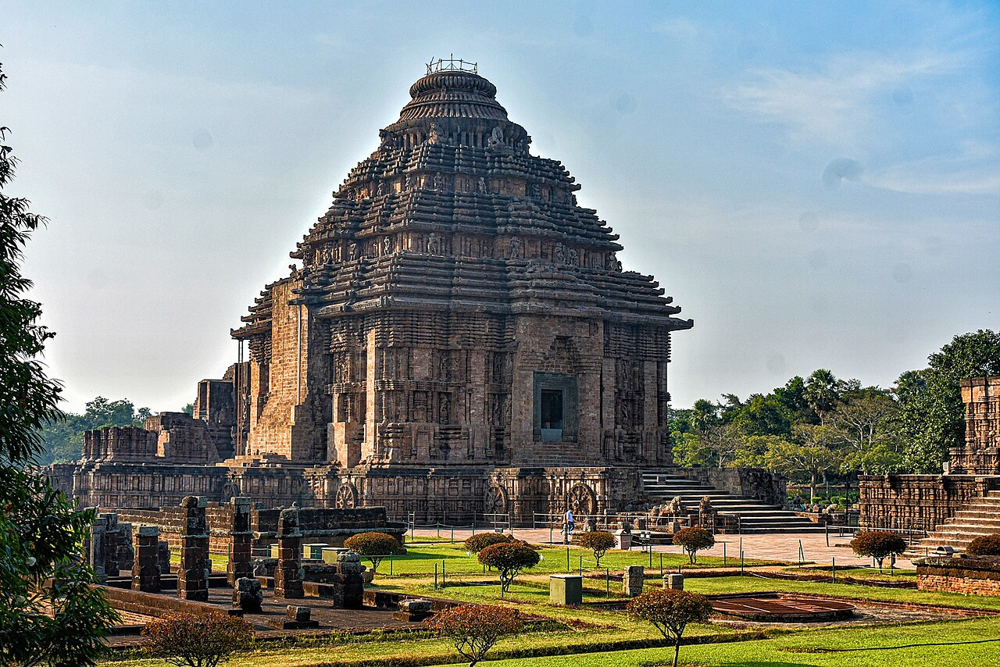

MandirVastu · Decoding the Sacred Architecture of India
Decode 3,000 years of sacred architecture — from the womb-chamber of the Garbhagriha to the sky-piercing Shikhara, every element of an Indian temple is a cosmic statement encoded in stone, proportion, and sacred geometry.
Explore 48 elements of temple iconography, filtered by type: architecture, sculpture, sacred geometry, or architectural style.
Every element has a full scholarly entry: history, symbolism, where it appears, what ancient texts say about it, and specific temple examples.
Use the Case Study entries to understand real temples before or after you visit them. Every stone will mean something different.

24 stone wheels marking the rhythm of the cosmos.
Step into the 13th-century masterpiece of King Narasimhadeva I. A colossal stone chariot designed to carry the Sun God across the heavens, Konark is not just a temple—it is a celestial observatory carved in stone.
The language of Indian architecture is divided into three primary lineages. Each represents a unique regional interpretation of sacred geometry, peak-form, and ornamentation.